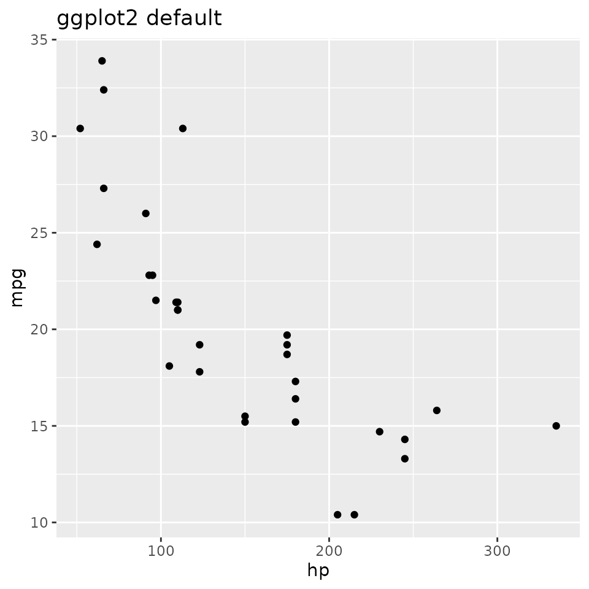
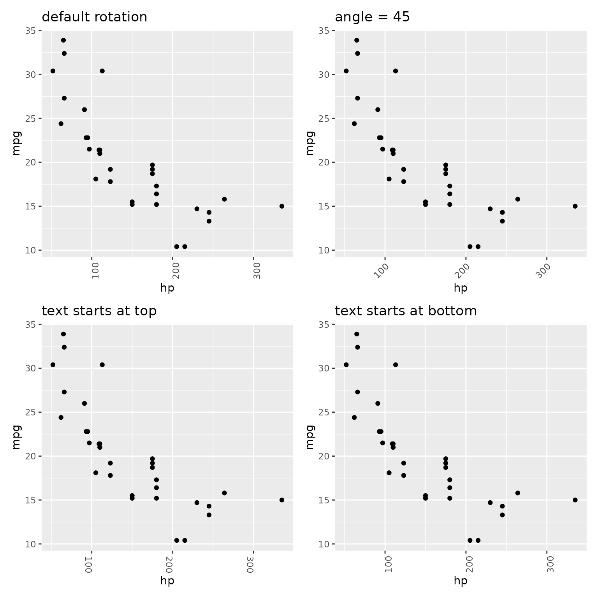
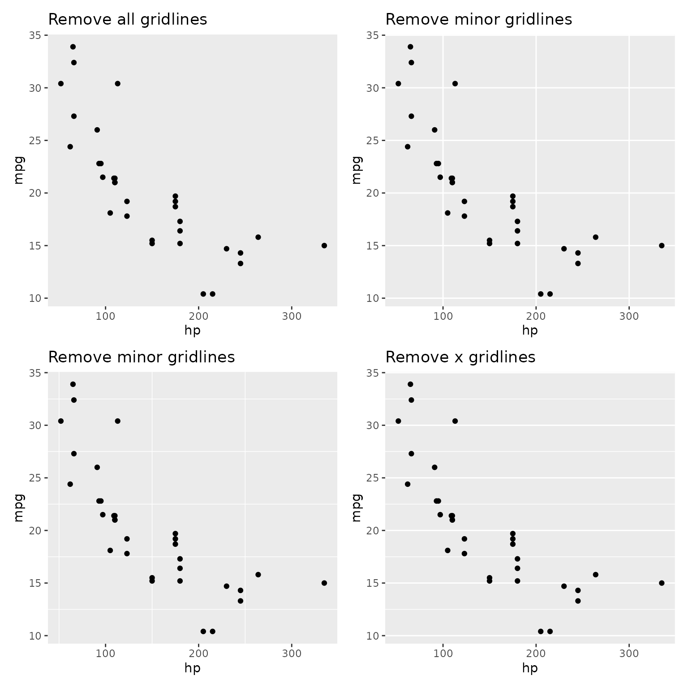
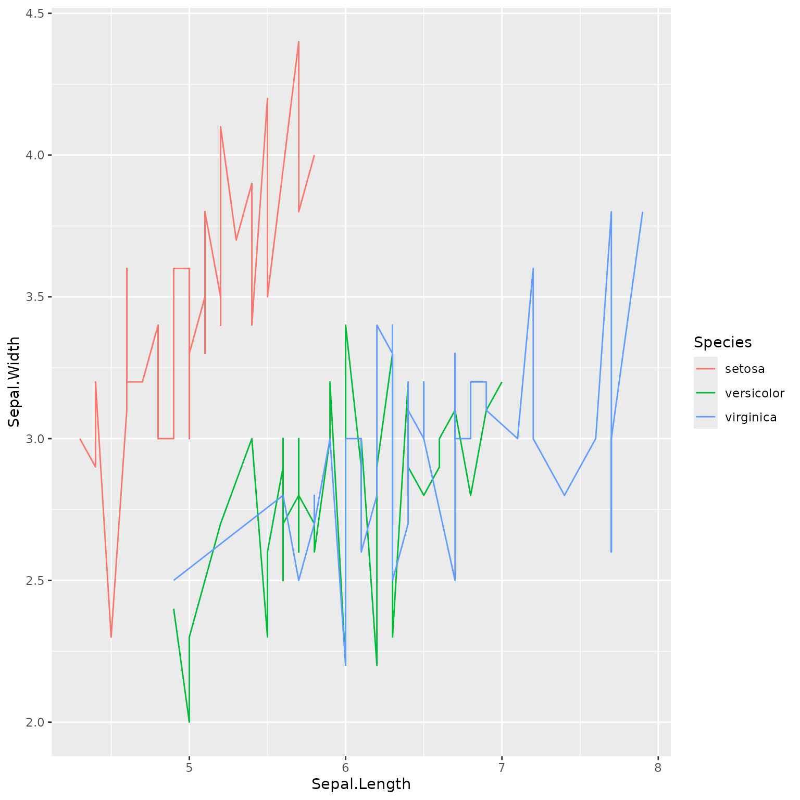

This package allows easy access to some common ggplot2
tasks.
Rotate Plot Labels
Rotating the x axis labels is a very frequently looked
up task, and we can make it easier. If we create a simple
ggplot2 plot
p <- ggplot(mtcars, aes(hp, mpg)) + geom_point()then by default, this looks like
p + labs(title = "ggplot2 default")
We can perform various rotations though
p1 <- p +
easy_rotate_x_labels() +
labs(title = "default rotation")
p2 <- p +
easy_rotate_x_labels(angle = 45, side = "right") +
labs(title = "angle = 45")
p3 <- p +
easy_rotate_x_labels("startattop") +
labs(title = "text starts at top")
p4 <- p +
easy_rotate_x_labels("startatbottom") +
labs(title = "text starts at bottom")
(p1 + p2) / (p3 + p4)
Remove Legends
Removing legends is made easier by the
easy_remove_legend function. When called without arguments,
all legends are removed (equivalent to
theme(legend.position = "none")). Alternatively, the names
of aesthetics for which legends should be removed can be passed.
p <- ggplot(mtcars, aes(wt, mpg, colour = cyl, size = hp)) +
geom_point()
p1 <- p +
labs(title = "With all legends")
p2 <- p +
easy_remove_legend() +
labs(title = "Remove all legends")
p3 <- p +
easy_remove_legend(size) +
labs(title = "Remove size legend")
p4 <- p +
easy_remove_legend(size, color) +
labs(title = "Remove both legends specifically")
(p1 + p2) / (p3 + p4)Remove Grid Lines
Grid lines can be completely removed, or removed in only one direction
p <- ggplot(mtcars, aes(hp, mpg)) + geom_point()
p1 <- p + easy_remove_gridlines() +
labs(title = "Remove all gridlines")
p2 <- p + easy_remove_gridlines(major = FALSE) +
labs(title = "Remove minor gridlines")
p3 <- p + easy_remove_gridlines(minor = FALSE) +
labs(title = "Remove minor gridlines")
p4 <- p + easy_remove_x_gridlines() +
labs(title = "Remove x gridlines")
# or
# p + easy_remove_gridlines(axis = "x")
# p + easy_remove_y_gridlines()
(p1 + p2) / (p3 + p4)
Plot Labels
Changing plot labels to a specified string isn’t particularly
difficult (labs(x = "my label")) but wouldn’t it be even
nicer if you could just add labels to your data.frame
columns (e.g. using labelled::var_labels()) and have these
reflected in your plot. easy_labs() makes this
possible.
## create a copy of the iris data
iris_labs <- iris
## add labels to the columns
lbl <- c('Sepal Length', 'Sepal Width', 'Petal Length', 'Petal Width', 'Flower\nSpecies')
var_label(iris_labs) <- split(lbl, names(iris_labs))These are visible if you use View(iris_labs) in
RStudio

